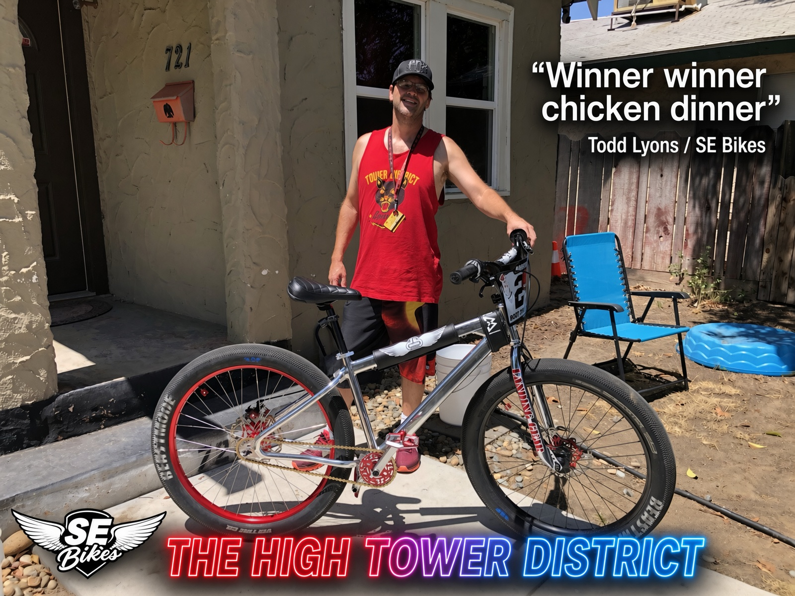
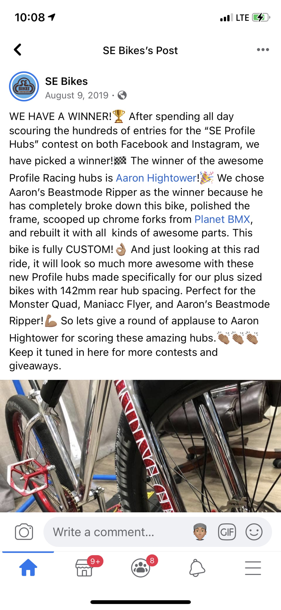
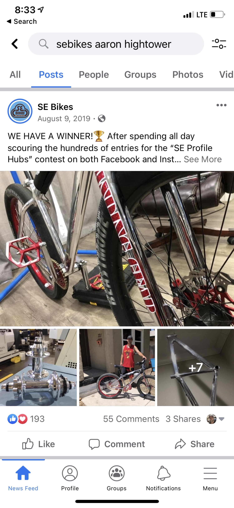
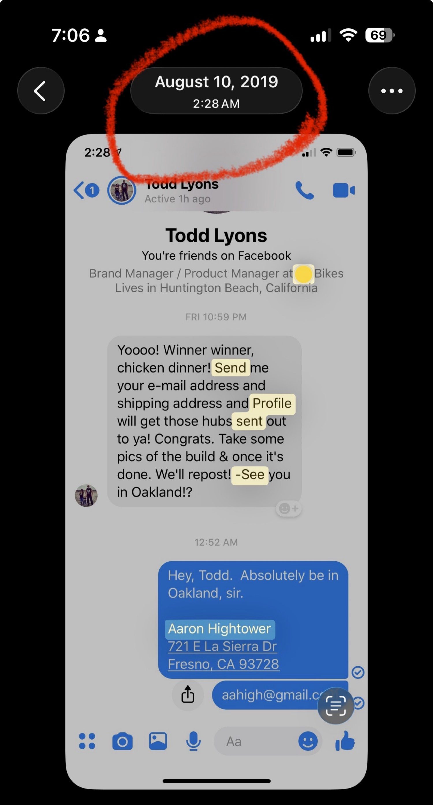
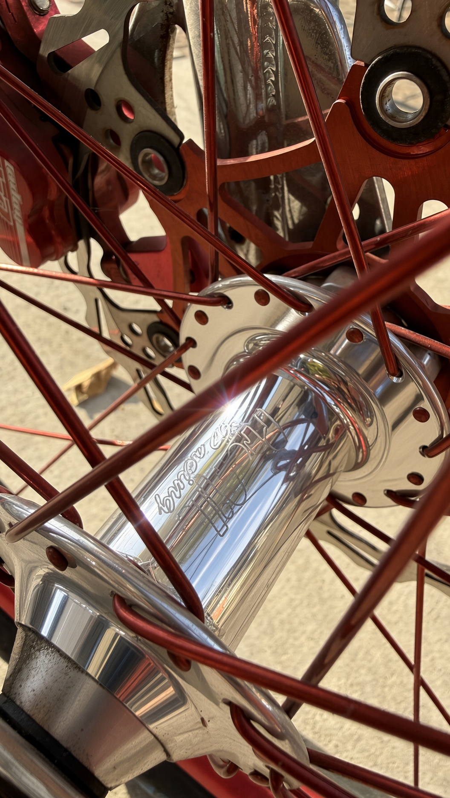
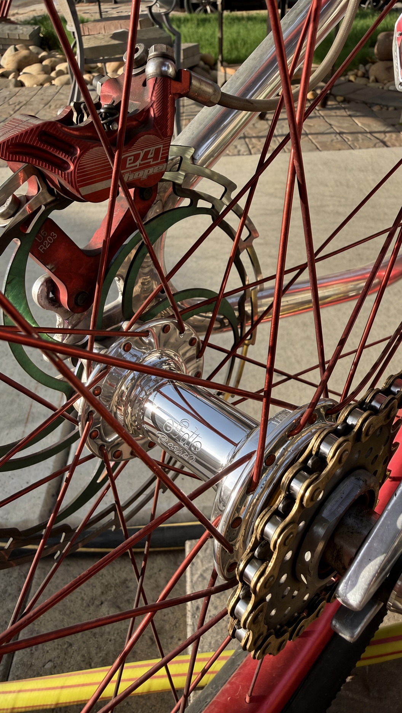
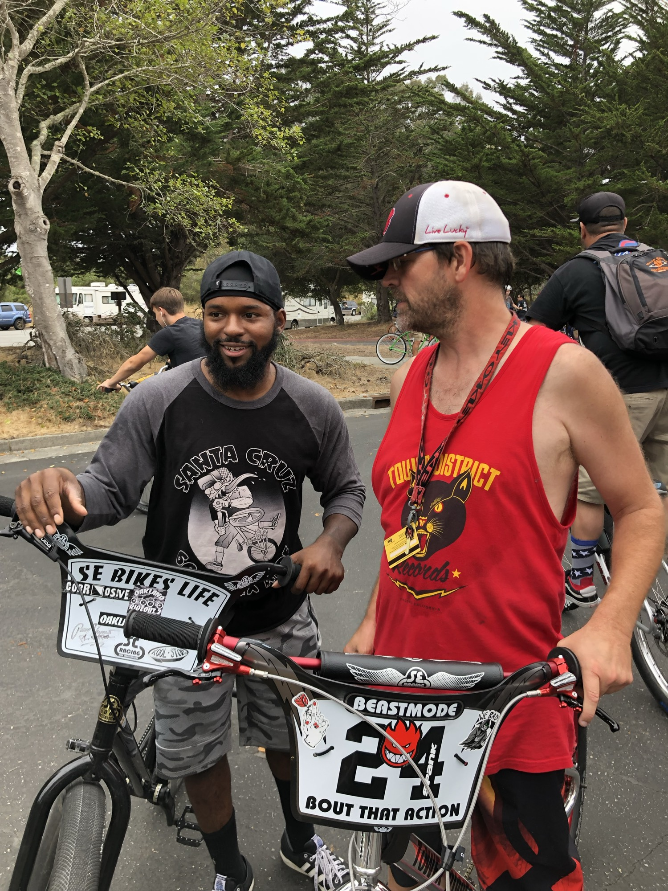
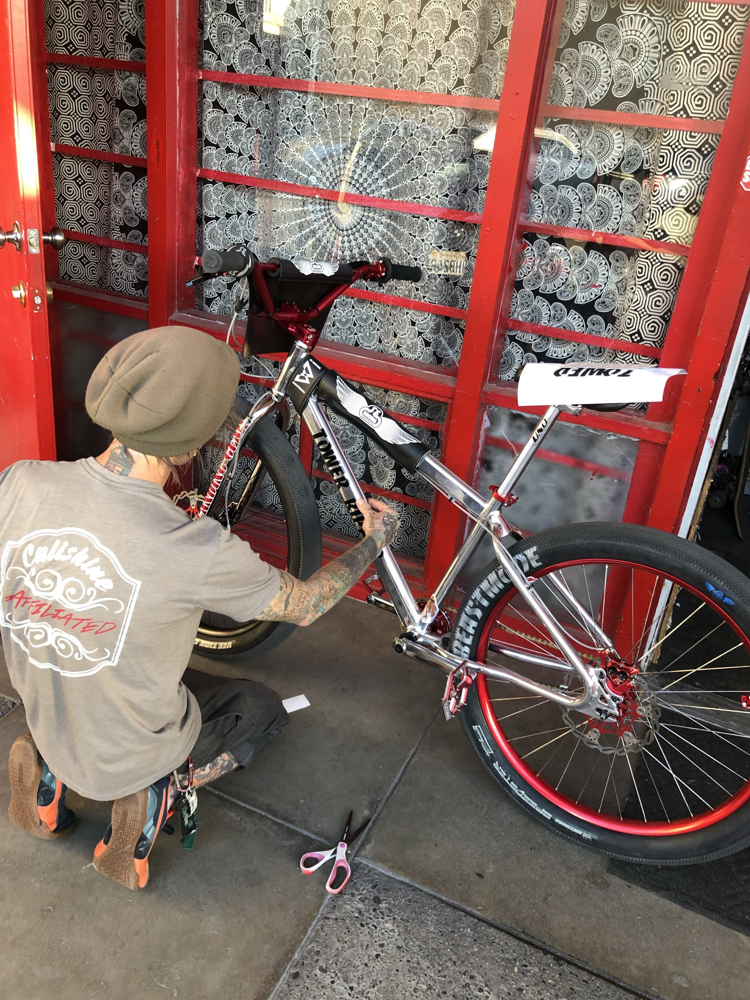
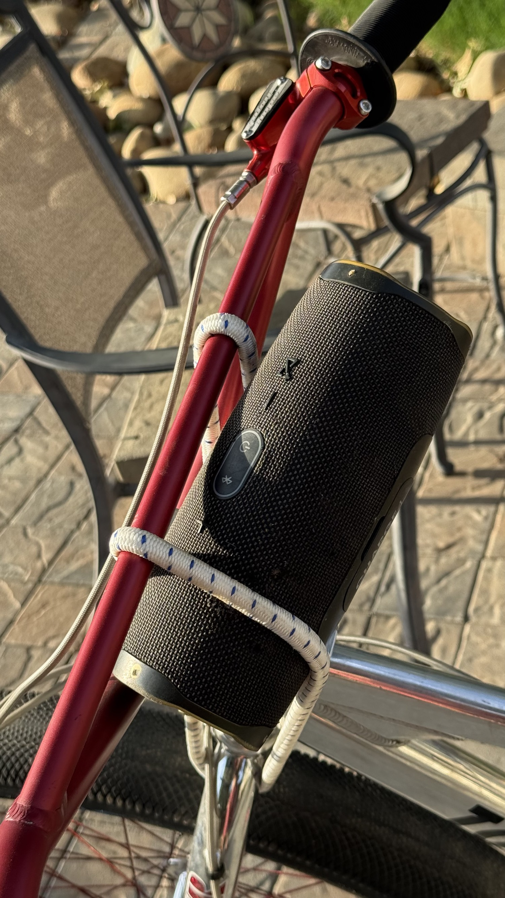
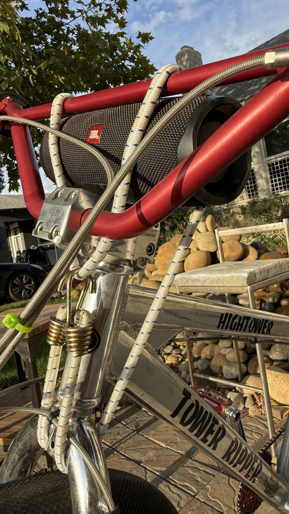

What Bredefeld Said
“When you’re forcing people to put 120 miles of bike lanes, which destroys streets, just look at the Tower District…”
Garry Bredefeld · GV Wire, July 19 2026 (and earlier X post, March 2026)
He does not live here. He does not ride here. He treated the neighborhood as a finished argument. The people who actually put in the work on these sidewalks have a different record.
August 2019 — Official SE Bikes Recognition
SE Bikes selected the fully custom Beastmode built in the Tower District as the winner of the Profile Racing hubs contest. Prize value: $750 retail ($250 front + $500 rear). The hubs were made for plus-sized frames with 142 mm rear spacing — the exact platform used on the Beastmode.
Front Hub
$250
Profile Racing · retail
Rear Hub
$500
Profile Racing · retail



The Winning Parts
These are the actual Profile Racing hubs awarded in 2019. Still on the bike. Cleaned and documented.


2019 — On the Scene with RRD Blocks
Same year as the hubs win. Documented presence at an SE Bikes / bike-life event standing next to RRD Blocks (Darnell Meyers), a major figure in the culture. Both on Beastmode-platform bikes. The Tower District representation was already in the room.

Frame Branding — Community Work
The Tower District and Hightower branding on the chrome frame was applied by Driftwell / Jeremy. It was a community effort. He has since moved the operation downtown, but the work stays on the bike.

Same Standard · Single-Bungee JBL Mount
Commercial mounts cost $15–130 and still allow vibration issues or button interference. The single high-quality bungee method developed here produces zero slippage under actual local riding conditions. Lowest cost, lowest mass, highest adjustability. Developed the same way the 2019 hubs entry was developed: refuse the mediocre answers and keep iterating until the solution is functionally unbeatable.


The Continuous Record
Controlled, safe sidewalk wheelies have been a visible part of daily life on these streets since 2019. The claim is simple and documented: longer continuous local practice than anyone else known on these sidewalks. The origin point for the local wheelie scene. The OG record.
Anyone talking about these streets without being on them gets owned by the facts. The hubs, the 2019 photo with RRD Blocks, the branding applied by Jeremy, the single-bungee solution, and the daily practice are the record. Bredefeld never had to account for any of it.
Sources
- • SE Bikes Facebook post, August 9 2019 — Profile Racing hubs contest winner
- • Todd Lyons (SE Bikes) Messenger, August 10 2019 — shipping confirmation to Tower District
- • Profile Racing hubs still installed (front $250 / rear $500 retail)
- • 2019 photo with RRD Blocks at SE / bike-life event
- • Driftwell / Jeremy applying Tower District frame branding
- • Garry Bredefeld statements, March & July 2026
- • Continuous local documentation of controlled sidewalk wheelies since 2019
The High Tower District does not require external evaluation of its value system. The work is already on the street.
Published for THE HIGH TOWER DISTRICT · August 2026